06 | CHAPTER
POWERS
"Those natural and specialized powers which are provided to a living body to perform special functions and became the reason of performance, preservation of individual and species- are called as faculties or powers."
Every individual, behave or function in a certain manner and produce special effects because of power that bestowed, that behavior reveal the internal or basic nature, this power from the intrinsic acumen present in object and is referred as faculty. Each faculty give rise to a specific function and each function is an expression of its corresponding faculty.
ENERGY, FACULTIES AND FUNCTIONS
However, energy is required to perform the functions along with powers. Humours are formed in liver after ingestion and digestion of food we eat and that cannot be possible without the assistance of fresh oxygen. Consequently, these humours then became the nutrients for cells, tissues and organs to maintain their growth and development.
When the oxygen is inhaled, glucose converted into ATP (Adenosine triphosphate) by oxidative respiration and as a result of this reaction energy is produced which is essential for living tissue. As long as the energy is produced, and available to the organs, the faculties of body will continue to work. Human body is granted with three faculties, vital, metabolic and psychic, to carry out specific functions by using this energy.
By referring the previous three organ theory of heart-liver-brain (in The Organs' chapter), the vital power is based on heart, uses mechanical energy for functions, controls movement of muscular tissue, regulate transportation and immune system. It has dryness as temperamental quality. The metabolic power is based on the liver organ, uses biochemical energy, controls epithelial tissue, metabolism is its specific action but also regulates the glandular system. It has dominant heat as temperamental quality. Then the psychic power, based on brain, uses electrical energy, controls and regulates the nervous tissue and its specific action is sensation and perception. It has moistness as temperamental quality.
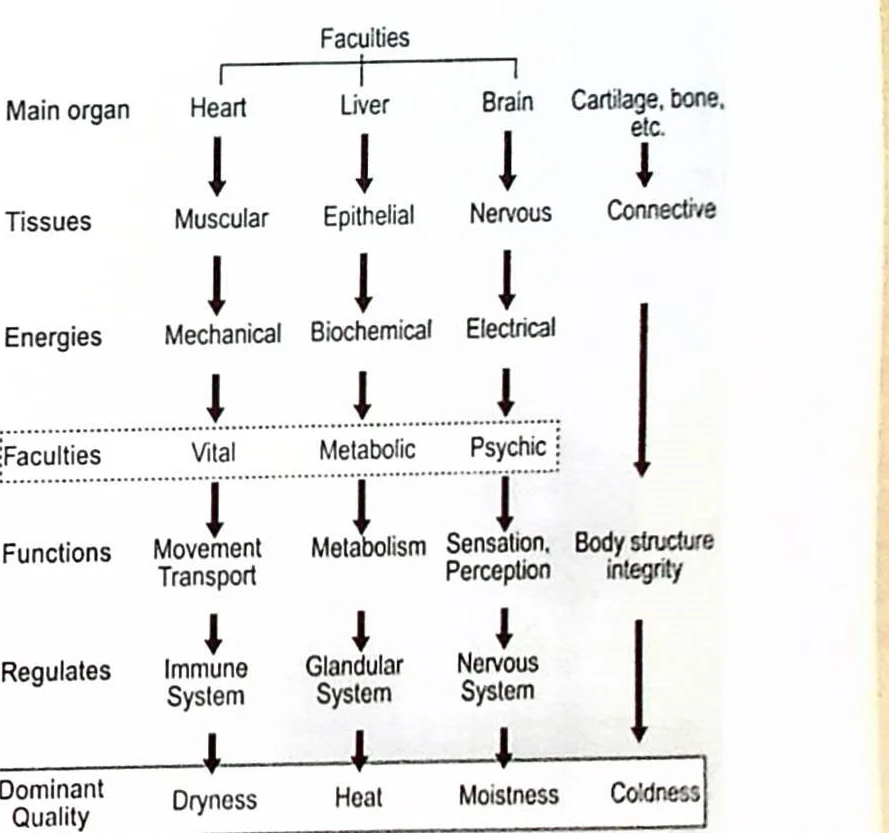
MAN WITH THE BASIC SCIENCES: EQUATING IBN SINA'S THEORY
Human being is made up of elements, humours, organs, temperament and then powers are given to perform functions. The basic sciences related to human being are in relation to Biochemistry which includes elements and their interaction with one another to form humours, then humoural dominance helps to diagnose the temperament, while anatomy is related to structure of an organ or tissues and the physiology is related to powers, energies and functions.
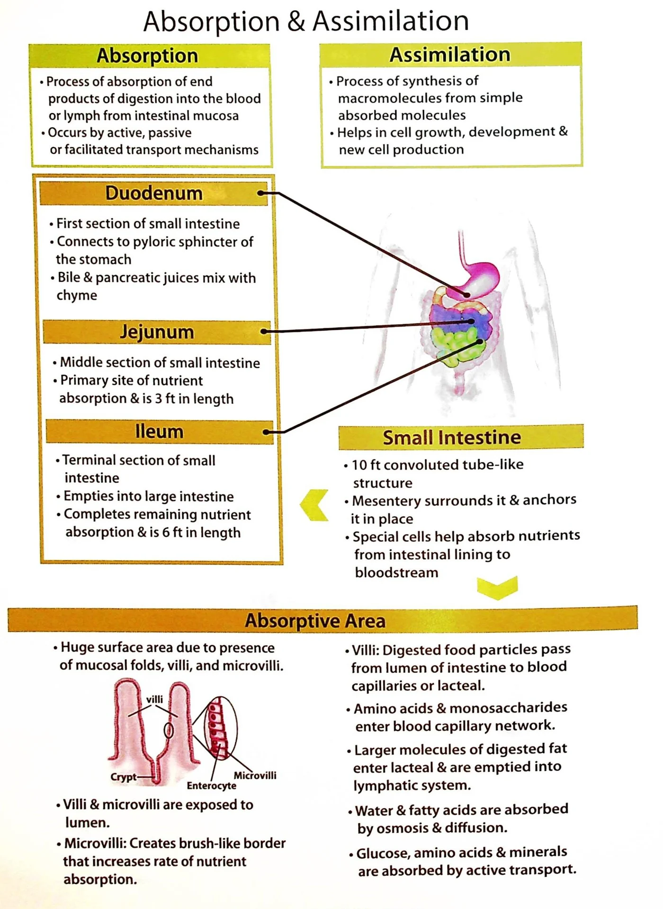
CLASSIFICATION
Powers are classified into three major classes
- Physical Faculty / Quwa Tabi'ya
- Nervous Faculty / Quwa Nafsani'ya
- Vital Faculty / Quwa Haywani'ya
PHYSICAL FACULTY / QUWA'A TABI'YA
Physical faculty is again classifying into two types.
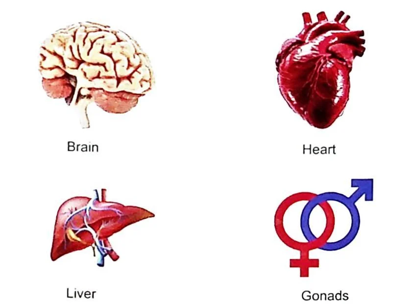
Primary Physical faculty / Quwa Tabi'ya Makhdoma
Primary physical faculty works for both individual and race.
FOR INDIVIDUAL
Performs two basic functions i.e. nutrition and growth.
Nutrition / Ghazi'ya (Absorption, assimilation and integration)
It is required for daily wear and Tear. By producing a change in food and make it able to absorb. Nutrition serves growth by providing the required nutriment. Each organ of body has a natural faculty which enables it to make suitable changes in the nutriment received by it and gives its own distinctive form There are many functions of nutritive faculty which includes absorption, assimilation and integration.
- Absorption / Quwa-e-muhasila'ah
The process by which food and other humors are brought into the tissues for replacement. This process is defective in atrophy, which is in reality, the result of deficient of food.
- Assimilation / Quwa-e-mulziqa
The process by which food is assimilated by the tissues. It is defective in Obesity.
- Integration / Quwa-e-mushaba
This is union between assimilated material and tissue hence it makes them one according to color and consistency. It is defective in Leukoderma.
Growth / Nami'ya
Growth is an increase in size within limits of normal physical properties and continues until full development is reached. It is required for the development of an organ according to spatial (height, width, depth) relationships and integrate nutriment material for completion of development. Growth occurs when quantity of nutriment is in extra amount of daily requirement.
FOR RACE
Performs two basic functions i.e. reproduction and formative development.
Reproduction / Moalid'ah
It is again served by Generative /Muhasil'ah and Primary Transformative / Tafsil'ah powers.
Generative faculty is inherent and responsible for the development of various organs according to their distinctive structure and temperament. It is also called as Primary Individualization and is the first to appear in development of embryo. According to Ibn-e-Nafis "it is the power which separates essence of sperm and ovum inside testis and ovaries, from compounds of other body and then make a particular organ from each of its part."
Primary transformative faculty provides altered combinations to sperm and ovum according to future organs with specific potentialities.
Formative Development / Musawir'ah
It gives shape and appearance to organs (cavities, foramin, smoothenessand roughness). This faculty is responsible for continuity of life and is served by process of nutrition and growth.
Secondary physical faculty / Quwa Tabi'ya Khadima
Secondary Physical faculty serves the primary one by performing following functions.
Digestion / Hazim'ah
The possible conversion of excrement material into nutritional material for absorption,is known as digestion. It requires more heat and moisture but no dryness. When waste materials are suitably liquified or thickened to facilitate elimination through normal excretory channels, this process is known as maturation.
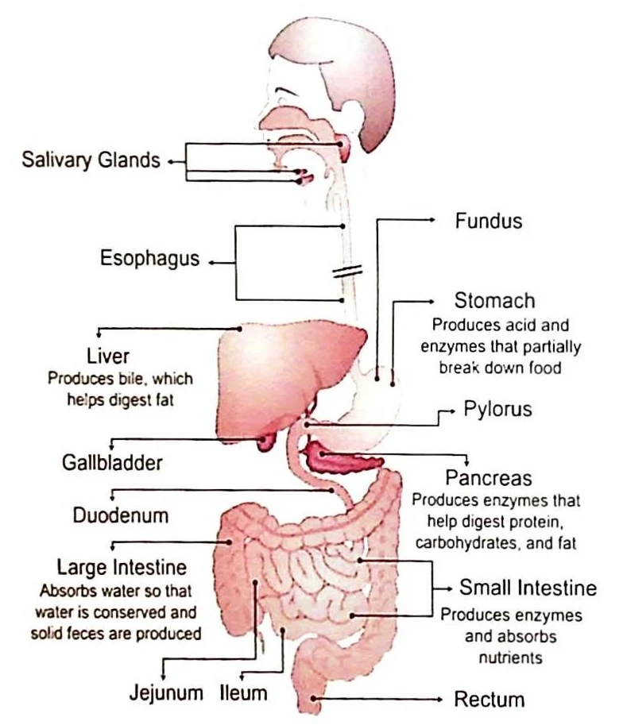
Absorption / Jazib'ah
The power which is responsible for absorption of nutritious material from food with the help of longitudinal fibers. It is the process by which blood and other humors are brought into the tissues for replacement.it requires more heat than dryness along with strong and quick movement. Absorption power functions in three ways,
- Magnetic absorption in case of iron.
- Vacuum absorption in case of water.
- Capillary in case of ions.
Retention / Masik'ah
This power causes the retention of nutritious material into the organs until its absorption with the help of transverse and oblique fibers. It needs more dryness than heat because the period of contractions greater than movement in oblique fibers. In children, retention is week because of excessive moisture.
Expulsion / Dafi'ah
It comes in action, when excess nutritive material is no longer required. It requires less dryness than retention and absorption and also need contraction without any persistence. For example, it works for the expulsion of urine, stool, sweat and also in case of vomiting.
So, the overall process includes Ingestion
--> Digestion --> Absorption --> Assimilation --> Elimination.
Solution: The food is first ingested by the mouth. Then the food is digested by the enzymes in the parts of the digestive system assisted by digestion faculty. The food is then absorbed and then assimilated into the cells of the body which is assisted by absorptive and retentive faculty. The undigested food is eliminated with the help of expulsive faculty.
Nervous Faculty / Quwa'a Nafsani'ya
According to modern medical science "Senses are physiological capabilities of organisms that offer data for perception". It is a system comprised of groups of sensory cell types, that reacts to a precise physical phenomenon. This phenomenon then corresponds to certain brain regions where they are perceived and interpreted. The function of nervous faculty is to serve all senses bestowed to humans. It performs two types of functions
- Perception / Cognition / Mudarik'ah- for analytical and practical knowledge
- Conation / Movement / Muharik'ah- for performance or action including impulse, desire
The difference between these two is, first one indicates the way we link concepts while the next one apply this knowledge in actions.
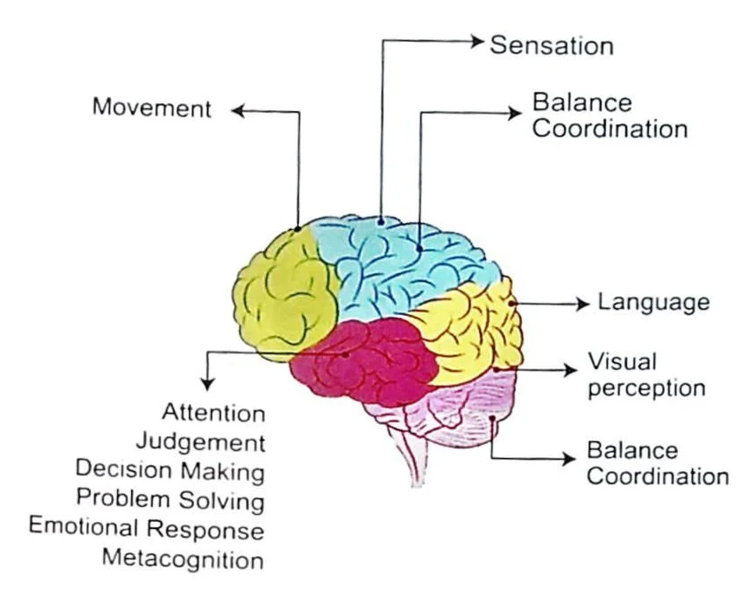
Perception / Cognition / Mudarik'ah
The process of knowing and understanding, encoding the information to store and process in way that can be retrieved is called cognition. To understand cognition, only the word WHAT should be remembered, for example, what is the meaning of, what is going one, what happened. It works in two ways i.e. externally and internally.
Five External Congnitive Powers / Quwa-e-khamsa Zahi'ra
- Vision / Quwa Basir'ah
- Hearing / Quwa Sami'ah
- Smell / Quwa Sham'ah
- Taste / Quwa Zaiq'ah
- Touch / Lamis'ah
Vision / Quwa Basir'ah / Ophthalmoception
Its center is Primary visual area located in occipital lobe of cerebrum especially calcaneal sulcus. It is served by Optic nerve. Visual power can be examined by
- Visual acuity by Snellen's chart (for Sharpness, details and contour of object)
- Field of vision by confrontation or perimetry
- Color vision by Ishihara's chart (Red, blue and green)
- Fundoscopy
Hearing / Quwa Sami'ah / Audioception
Its center is Primary auditory area located in Temporal lobe of cerebrum. It is served by Vestibulocochlear neve. Hearing power can be examined by
- Equilibrium (by Rotation and caloric)
- Hearing (by Watch test, Whisper's test, Weber's test, Rinne's test)
Smell / Quwa Sham'ah / Olfacoception
Its center is situated in Uncus and hippocampal gyrus (Cerebrum) in Temporal cortex. It is served by Olfactory nerve.
- There are seven types of smell to which our nose is sensitive and includes putrid, acrid, ether, mint, flower, mushk and camphor.
Taste / Quwa Zaiq'ah / Gustoception
It works for the recognition of flavor (sense of taste and smell perception i.e Temperature, Texture, odor and taste). Its center is lies in inferior part of Posterior Central Gyrus in cerebrum. It is served by Hypoglossal (Position, symmetry, tremors and movement) and Glossopharyngeal nerve (Posterior 1/3rd of tongue). Tongue is sensitive to Sweet, bitter, sour, salty and Umami.
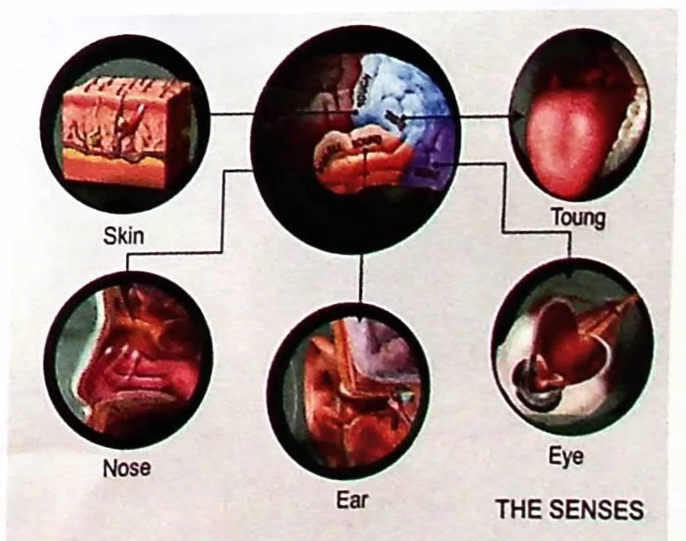
Touch / Lamis'ah / Tacticoception
Its center is primary Somatosensory area in parietal lobe of cerebrum. It is responsible for appreciation of shape, size, texture, and weight.
Five Internal Internal Cognitive Powers/ Quwa-E-Khamsa Bati'na
- Composite sense / His-e-mushtarik / Common sense
- Imagination / Mutakhiyl'ah / Thinking
- Intuition / Wahim'ah / Apprehension
- Memory / Hafiz'ah / Retention
- Intellectual / Mutasarif'ah / Ideation
Composite sense / His-e-mushtarik / common sense
According to physicians, it includes perception and ideation.
- Perception which receives all sensations composes them into percepts and enables proper sensory appreciation. Center of perception is anterior ventricle of brain.
- Ideation which comes into action after perception and is concerned with the storage and retention of percepts after their disappearance.
Imagination / Mutakhiyl'ah / Thinking
- Thinking is mental impression process that continues to happen unless it is controlled. It rearranges the impressions and sometimes produces not only images derived from perception, but occasionally, adds something more which is contrary to perception it serves rational mind.
- Imagination serves intuition and is related to Unreal thoughts and sometimes by voluntary thoughts that is made by effort.
Intuition / Wahim'ah / Quwa-e-mutasarif'ah / Apprehension
It is the process which informs animals that wolf is their enemy, that they have to take care of their young ones. It is an ability to understand something indistinctively without need of conscious and reasoning. It directs the concepts which had not been perceived by senses. It gives an impetus to that which had not perceptible basis. Its center is mid ventricle of brain.
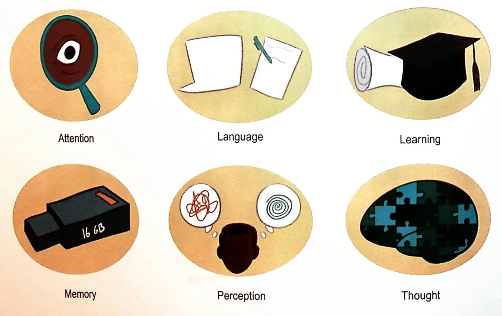
Memory and recall / Hafiz'ah and Mutazakkira / Retention
Memory is an indication that learning has persisted over time. It is the store house for intuitive ideas. Memory includes three steps:
- Encoding (sensory information to neuronal language) by three ways visual encoding (by images), Semantic encoding (by meaning) and Acoustic encoding (by sound).
- Storage
- Retrieval
Intellectual / Mutasarif'ah / Reasoning
Only faculty that has been bestowed to humans and is the reason of their superiority on all other animals.
Conation / Movement / Muharik'ah
It is related to performance or action, volition means by the use of will, therefore, it is the faculty with the purpose. It is principally, connecting the knowledge to behave and associate with "Why" concern. It is the process, by which the longitudinal muscles fibers, contract and relax to move the joints and other organs.
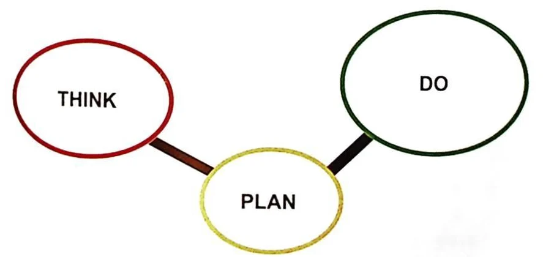
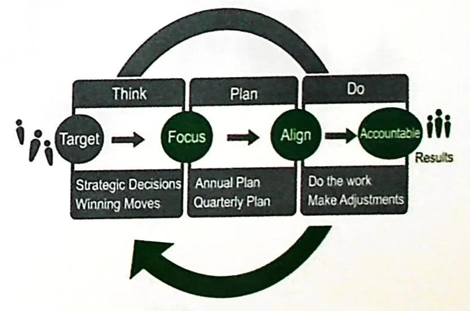
This results from the transmission of impulses to the muscle fibers through their corresponding nerves. As sometimes, movement is initiated by thinking, so it is also subordinating to the will.
In this faculty planning / thinking and intellectual works side by side to get work done. Conation is the deliberately, planned, goal oriented performance. To evoke the performance of conation, just remember, self-direction, goals, plans, commitment and self-regulation
VITAL FACULTY / QUWA'A HAYWANI'YA
Vital faculty is a power which enables the organs to receive sensory and motor activity and performs various functions of life. Emotional moments of fear and anger are also attributed to this faculty and is produced according to the temperament. Vital force is ethereal (Lat'if) and is formed by lighter portion (produced by liver) and vaporous portion (produced by heart).
According to Aristotle "when an organ loses its nervous faculty and retains the vital faculty than it can regain vitality / life / sensations and emergence of all faculties depends on vital force".
Vital faculty resembles the physical faculty in its functions being involuntary. It resembles nervous faculty in that its functions also includes the two opposite movements of contraction and expansion.
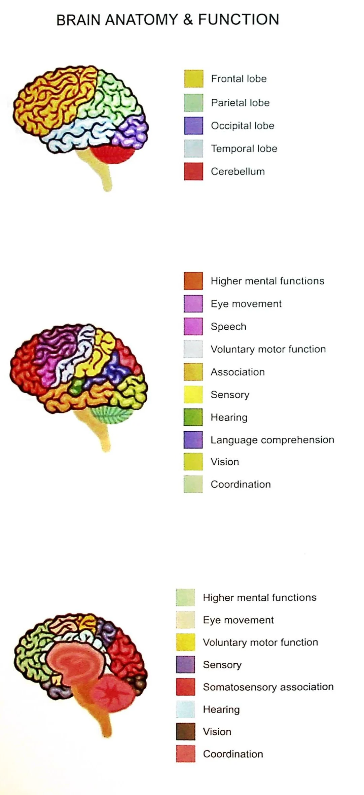
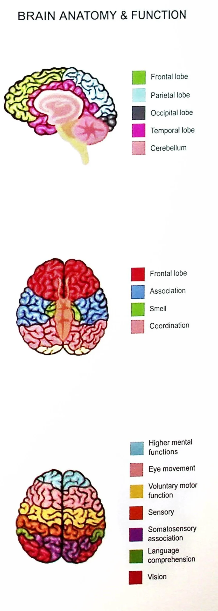